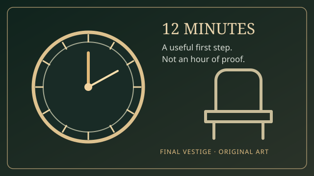

Final Vestige Studios / Tools under review / Unpublished pilot
Could twelve minutes become a meditation habit?
You don't need to believe a recording can change your brain on command to ask a useful buying question: would a short, structured audio routine make it easier for you to sit down and try?
Independent purchasing guide · Zen12 seller information cross-checked 17 November 2026 · No affiliate arrangement verified · No live purchase link
The difficult first twelve minutes
Picture a reader finishing an hour of articles about attention, turning off the screen, and discovering that sitting quietly for two minutes is uncomfortable. The interruption is not a moral failure or proof of a disorder. It's a practical problem: the beginning of a routine can be more difficult than the idea of the routine.
Zen12 is one commercial answer to that problem. The seller describes downloaded twelve-minute audio sessions organized as a progressive course, with a choice among guided meditation, relaxation music, white noise, and nature sounds. Some people may simply prefer a prompt or soundscape to silence. Whether its particular sound technology produces its advertised neurological or health benefits is a separate scientific question that has not been resolved for this named product.
Before deciding anything, try this without a purchase: set a twelve-minute timer, sit somewhere safe and comfortable, and choose a neutral focus such as feeling your breath or ambient room sounds. If your attention wanders, note it and return. Afterward, record whether you finished, what you liked and what you would change. This is personal observation, not a clinical test, treatment or guaranteed focus booster.
Final Vestige's existing free Seven Day Focus Fieldbook provides a structured alternative with no credit card and no new subscription service. Its enrollment is the existing Jetpack/Dispatch path; you can review this buyer guide without subscribing.
What the seller actually describes
Format
Twelve-minute sessions
The official Zen12 product pages describe twelve-minute listening sessions, up to twelve progressive levels, and four sound styles per level. Described formats are not independently measured outcomes.
Package distinctions
Three public tiers
The public catalog distinguishes Beginner (first six levels; 24 MP3s), Premium (all twelve levels; 48 MP3s), and Advanced (last six levels; 24 MP3s). The separate promotional page describes a full 48-MP3 package and a changing offer. These surfaces are not interchangeable checkouts.
Setup and accessibility
Download, listen, decide
The seller describes downloadable MP3s and says headphones are not required. Check file compatibility, captions or transcript availability, how to request support, and whether sound sensitivity makes audio less suitable before purchase. Do not listen while driving or operating machinery.
Refunds and terms
Verify the actual checkout
The ordinary public site advertises a one-year money-back guarantee, while the promotional funnel has different pricing and packaging presentation. Final Vestige has not authenticated terms for any referred checkout; do not rely on a displayed promotion or countdown until its exact binding conditions are confirmed.
Optional 42-second original short-film concept / Not yet playable
What a twelve-minute routine can—and cannot—promise

Read the entire 42-second film transcript and six-scene plan
- 0–7 s. “Starting a quiet habit is often harder than wanting one.” A plain chair beside a clock; no human endorsement.
- 7–14 s. “A twelve-minute timer can make the first step concrete.” Original clock illustration; numbers shown clearly.
- 14–21 s. “You can try that free before buying any audio.” Show a notebook with the question “Did I finish?”
- 21–28 s. “Zen12 sells short recordings in different listening styles.” Simple abstract audio lines; on-screen text says “Seller-described format.”
- 28–35 s. “That does not prove an hour of meditation fits into twelve minutes.” Clock stops; on-screen disclaimer “Product efficacy not independently established.”
- 35–42 s. “Compare the edition, evidence, alternatives and actual terms before you choose.” End card: “Independent guide · No active buying link.”
Captions concept accompanies source as ZEN12_42S_CAPTIONS.vtt. No image/video rights from the seller used. Film not rendered, thus there is no playback, timing, audio-mix, contrast or caption-sync acceptance evidence.
What attention science does—and does not—tell us
The 1974 Loftus–Palmer memory experiments showed that question wording can affect eyewitness speed estimates and later answers about absent broken glass. Their result is not evidence that Zen12 improves memory. A 2023 research synthesis found that repeated misinformation can increase suggestibility under tested conditions. It neither evaluates meditation audio nor establishes that self-hypnosis can recover accurate memories.
Some research finds benefits from certain mindfulness practices under particular study conditions, but an outcome observed in a research protocol cannot be transferred to a specific audio brand, duration or sound mix without product-relevant evidence. Claims that twelve minutes of Zen12 deliver an hour of ordinary meditation, automatically control brainwaves, treat anxiety, restore memory, or guarantee cognitive performance remain unsubstantiated for this buyer guide. They are not promises from Final Vestige.
The choice is therefore between formats and buying terms, not between an independently proven miracle and doing nothing. One person may prefer a guided voice; another may prefer a timer and silence; a third may be better served by avoiding commercial material altogether.
Five questions worth asking before spending
- Do I need purchased audio to solve the actual problem? If the goal is starting a short routine, try the free timer exercise and Fieldbook first.
- Which edition would I receive? A six-level 24-MP3 package is not the same as the full twelve-level 48-MP3 package. Confirm at checkout, not from a general overview.
- Will this format fit the way I listen? Try free audio when the seller makes it available and check device, accessibility and sound-comfort requirements.
- What exactly can I verify? Session length and published file counts are seller catalog information; therapeutic, neurological and hour-equivalence claims require independent product-specific evidence.
- What are the final price, return conditions and support process? Check the exact authorized referred checkout in writing, including taxes, renewals if any, any digital-download restrictions, and how a refund would actually be requested.
There is no need to decide under a countdown, through an emotional testimonial, or because an article about unreliable memory made you uneasy.
Sources and independence
Product-description sources (seller representations; not endorsements): Inspire3 official catalog, inspire3.com; Zen12 official product and package descriptions, zen12.com and zen12.com/about; distinct promotional full-course surface, zen12.com/secret/. Scientific context: Loftus & Palmer (1974), doi:10.1016/S0022-5371(74)80011-3; O'Donnell et al. (2023), doi:10.3389/fpsyg.2023.1201674. Final Vestige's published Puységur archive documents how testimony, institutional authority and evidential limits interact. FTC Endorsement Guides and Health Products Compliance Guidance govern the planned affiliate disclosure and claims process.
We have not used or independently tested Zen12. Our editorial conclusions are separate from any prospective commercial relationship. Public seller offer pages may contain prices or coupons that do not apply to this unpublished guide or a future referral; therefore no price or buying link appears here.
Prospective commercial consideration / Not activated
Considering the Zen12 course?
At this stage, the useful next step is to review the distinctions above and decide whether an audio-supported routine suits you. A verified purchase option may be shown here only after independent approval of the exact affiliate partner, product, channel, earning URL, checkout and return terms.
If you purchase through a future earning link, Final Vestige may earn a commission at no additional cost to you. No such link is currently active; this page earns no commission through the disabled control below.
A disabled control is deliberately not an off-site destination. There is no invented URL, hidden redirect or tracking script.
Prefer to keep exploring? Read the historical Puységur files, try the change-blindness investigation, or get the existing free Fieldbook.